Shared package
#Summary cards
Shows identity, metrics, actions, columns, supporting content and a footer.
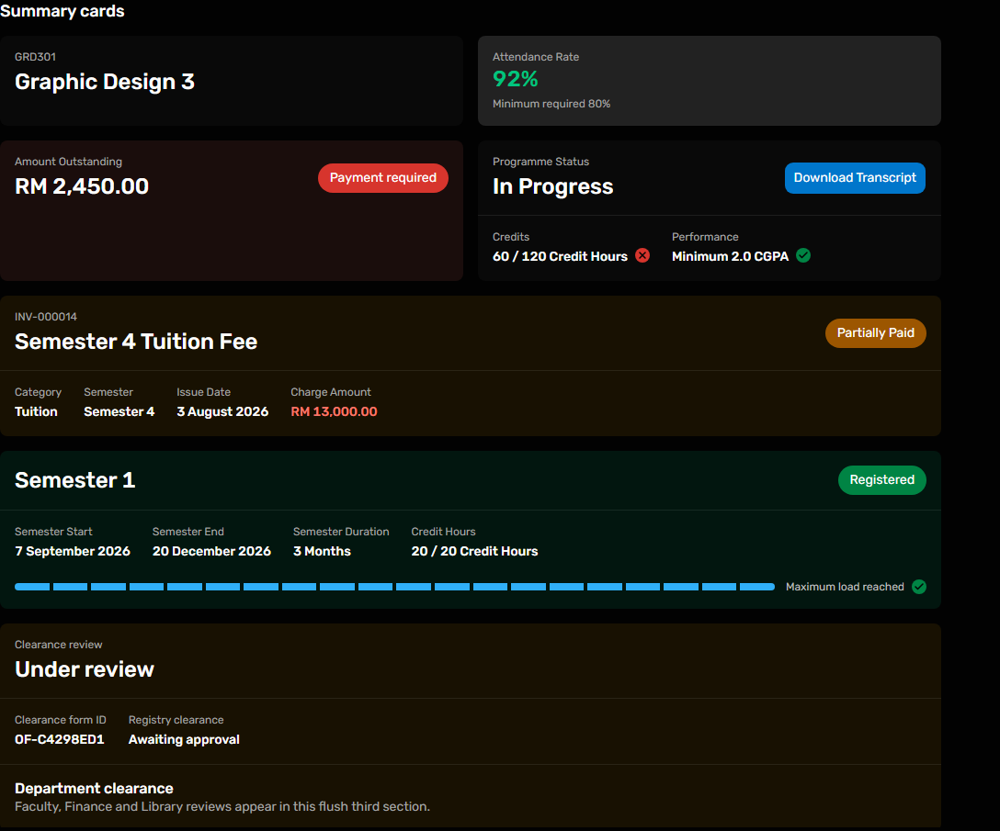
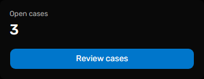
@raisd-campus/design-system/system/summary-card · Versioned catalogue
Design system · released package 0.1.0
Reusable page, card, table, media and feedback layouts
Static captures use mock student data. Click a preview to inspect it at full size. Exact props come from the released package declarations or the owning student source.
Shows identity, metrics, actions, columns, supporting content and a footer.


@raisd-campus/design-system/system/summary-card · Versioned catalogue
Use the component for this visual pattern; the consumer supplies data and workflow decisions.
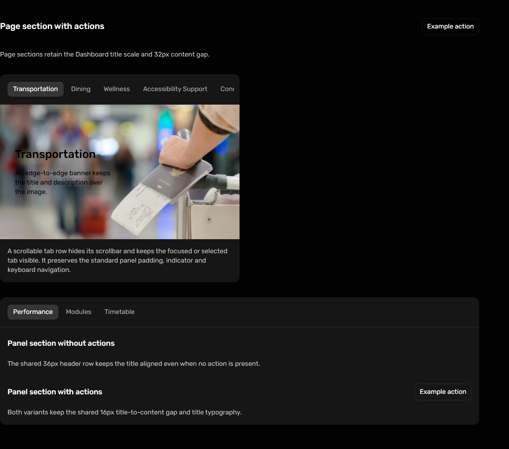
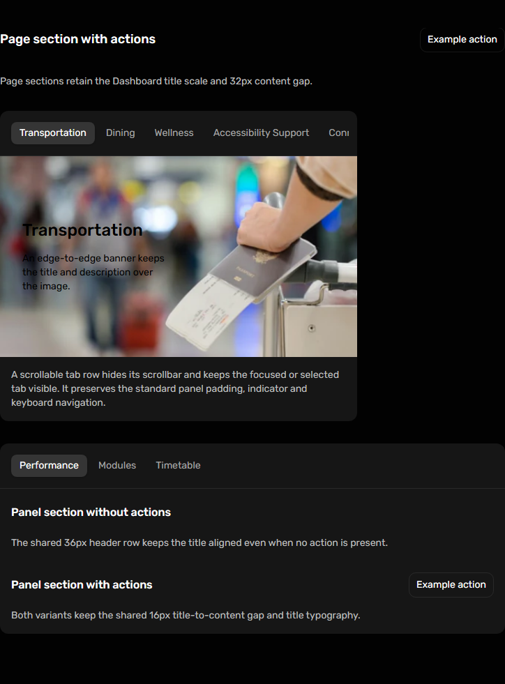
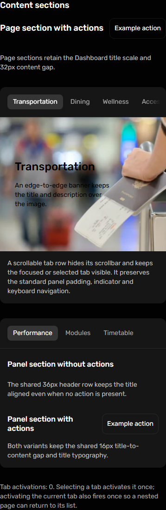
@raisd-campus/design-system/system/content-section @raisd-campus/design-system/system/page-panel-layout @raisd-campus/design-system/system/tabbed-page-panel · Versioned catalogue
Shows media, missing-media and gradient treatments within the shared panel.
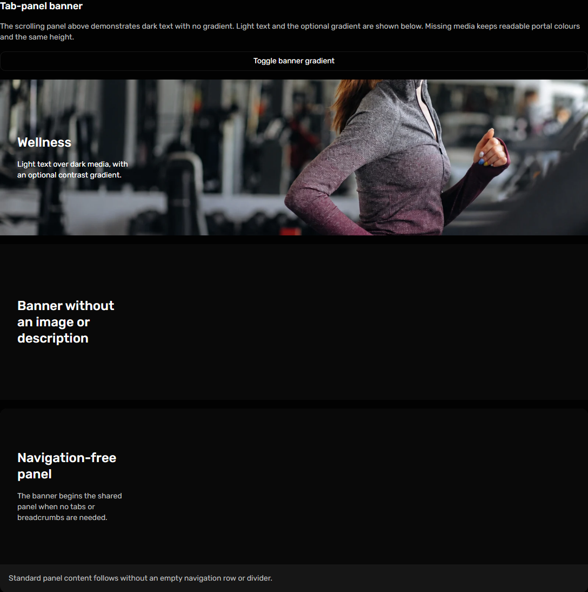
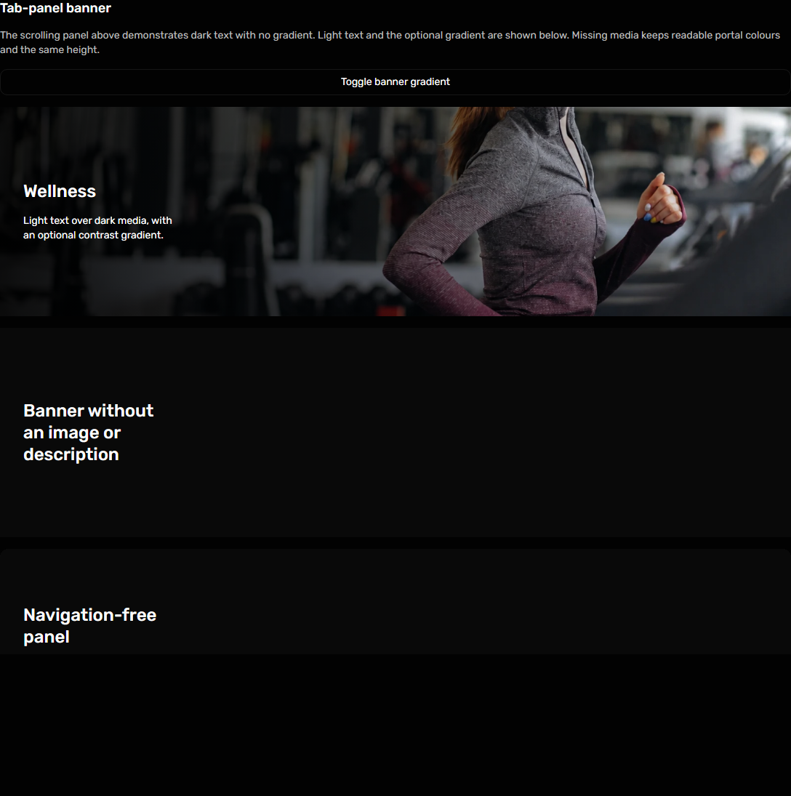
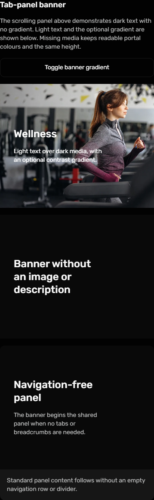
@raisd-campus/design-system/system/tabbed-page-panel-banner · Versioned catalogue
Use the component for this visual pattern; the consumer supplies data and workflow decisions.
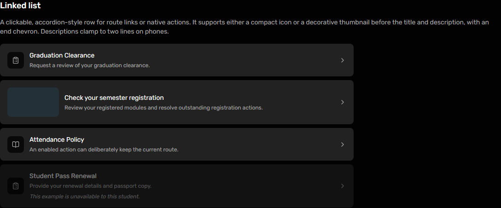
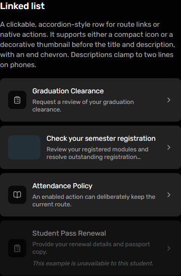
@raisd-campus/design-system/system/linked-list · Versioned catalogue
Use the component for this visual pattern; the consumer supplies data and workflow decisions.
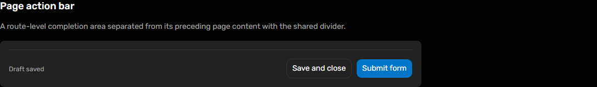
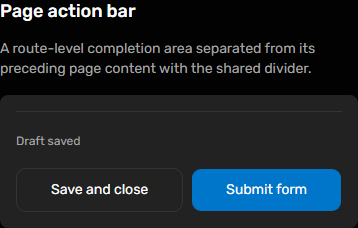
@raisd-campus/design-system/system/page-action-bar · Versioned catalogue
Use the component for this visual pattern; the consumer supplies data and workflow decisions.
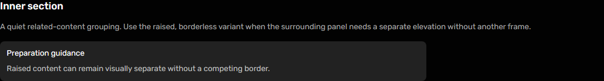
@raisd-campus/design-system/system/inner-section · Versioned catalogue
Use compact cards for record lists and a scrollable semantic table for comparisons.
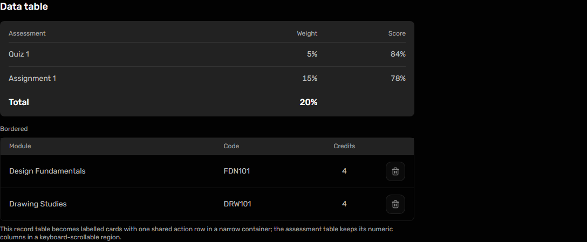
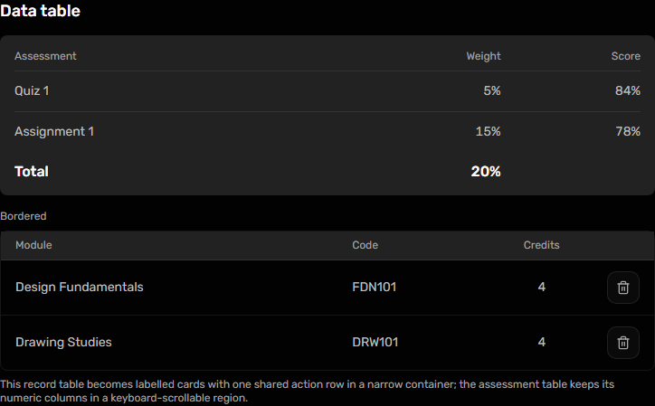
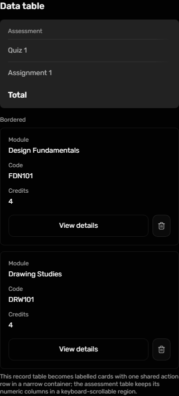
@raisd-campus/design-system/system/data-table · Versioned catalogue
Use the component for this visual pattern; the consumer supplies data and workflow decisions.
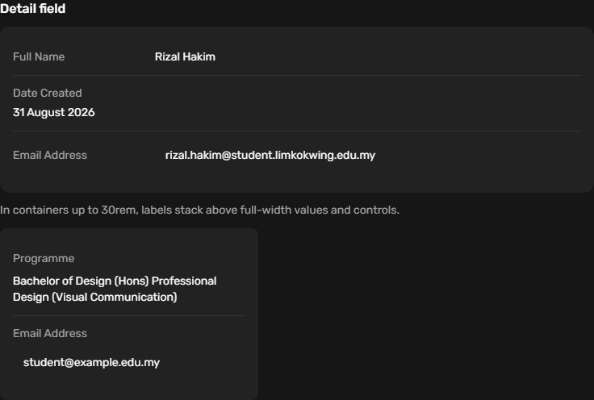
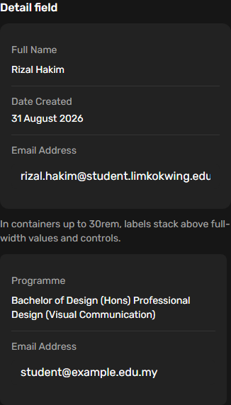
@raisd-campus/design-system/system/detail-field · Versioned catalogue
Use the component for this visual pattern; the consumer supplies data and workflow decisions.
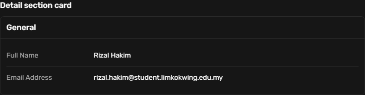
@raisd-campus/design-system/system/detail-section-card · Versioned catalogue
Use the component for this visual pattern; the consumer supplies data and workflow decisions.
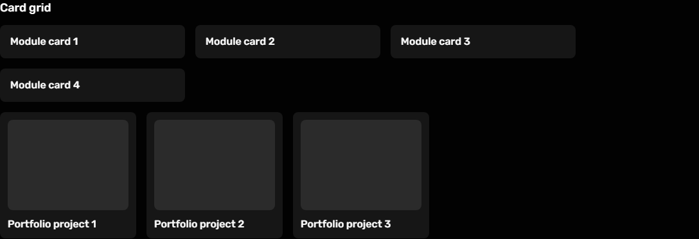
@raisd-campus/design-system/system/card-grid · Versioned catalogue
Use the component for this visual pattern; the consumer supplies data and workflow decisions.
@raisd-campus/design-system/system/issue-card · Versioned catalogue
Use the component for this visual pattern; the consumer supplies data and workflow decisions.
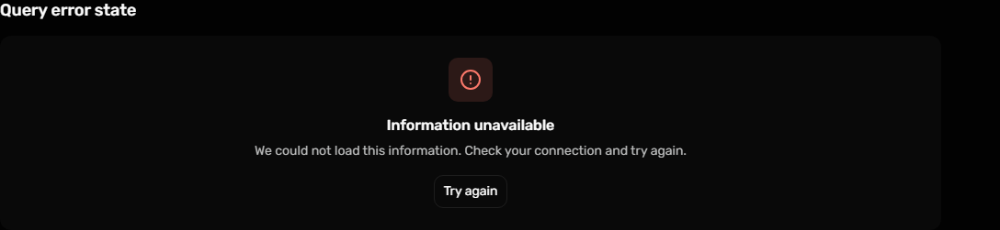
@raisd-campus/design-system/system/query-error-state · Versioned catalogue